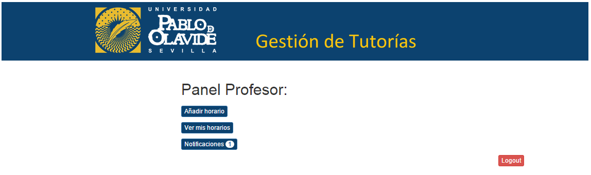

Manual de usuario de profesor¶
En primer lugar, si un usuario desea usar el sistema debe iniciar sesión con sus credenciales en la página de login.
Si algún profesor no posee estas credenciales deberá contactar con el administrador del sistema.

El panel del profesor es el siguiente donde el profesor, como usuario del sistema, puede añadir o ver sus horarios y ver sus notificaciones, donde pueda aceptar o declinar sus tutorías.
